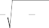
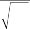

Many portfolio managers screen and rank stocks using Z-scores. Sometimes stock screens and rankings supplement the use of a fac- tor model in determining the mix of stocks for the portfolio. More often they are used as alternatives to the factor model. Since screen- ing and ranking are widespread practices among managers, we discuss them more fully in Chapter 5.
In the context of stock screening and ranking, a Z-score is a stock’s standardized exposure to a fundamental factor. To calculate the Z-scores for the stocks in some investment universe, we need to know the factor exposures of every stock. Then, for each stock, we subtract the universe’s mean factor exposure from the stock’s indi- vidual factor exposure and divide that difference by the standard deviation of factor exposures for the universe. What comes out of this standardization is a set of Z-scores, factor exposures with a mean of 0 and a standard deviation of 1.
For example, suppose that we want to calculate Z-scores for exposure to the P/B ratio. If 1, …, N are the P/B ratios of stocks 1, …, N, then the Z-score of stock i is defined as
z i
i
(3.7)
where and are the average and standard deviation of 1, …, N. The standardization allows us to interpret the Z-score in the fol- lowing way: If zi is 2, then the P/B ratio of stock i is 2 standard deviations away from the average.
Given the Z-score of one factor—or more commonly, of many factors—portfolio managers can develop a number of screening and ranking strategies. We look at a simple example in the next section and more realistic examples in Chapter 5.
3.5 HYBRIDS OF THE MODELS AND THE INFORMATION CRITERION
Practitioners often try to add extra inputs to the basic QEPM mod- els by combining them with ad hoc models. The resulting hybrid models are sometimes reasonable descriptions of stock returns, but
in many cases they have a number of undesirable effects. The most critical problem with hybrids is that they frequently violate the information criterion.
Recall that in order to uphold tenet 4 of QEPM and satisfy the information criterion, a portfolio manager must use all available information in the most efficient way. A hybrid model combining two models that are based on different information may violate the information criterion by combining the two original sets of informa- tion inefficiently. If a hybrid model is based on two models that use the same information, the hybrid may violate the information crite- rion by incorrectly “double counting” the information. Consider the following hypothetical situation. Adam, a portfolio manager, creates a fundamental factor model but decides to combine it with a Z-score analysis. Specifically, Adam calculates the expected return based on the Z-score method and adds this expected return to the fundamen- tal factor model as a constant. Adam uses portfolio management software that implements the fundamental factor model automati- cally and allows the user to add a constant [i.e., in Eq. (3.1)].
Is Adam using all the available information in the most effi-
cient way? Not if he created the Z-score model and the fundamen- tal factor model from the same data. The addition of the Z-score analysis not only presents no gain, but it in fact also introduces distortion in the model, which will lead to a less-than-optimal port- folio. Even if Adam used different sets of information to create the Z-score model and the fundamental factor model, the two sets of information are still not being combined in the most efficient way. In either case, the hybrid does not satisfy the information criterion. With data on his models and portfolio, we can find out exactly how inefficient Adam’s hybrid is by calculating the information loss. The following numerical example illustrates the problem with patching together two models.
3.5.1 The Setup
Imagine that there are only two stocks in the world, stock A and stock B. Suppose that current stock returns r are determined by the price-to-earnings (P/E) ratios of the previous period. Specifically, we assume7

7 In reality, we never know the true return-generating process, so the example may seem unrealistic. The fact that we are assuming certainty in the return-generating process, though, does not affect the lesson of the example that combining two models creates distortion.
rA,t1
P
0.1 E
0.1 E
0.1 E
E A,t1
EA,t1 N 0, 20
(3.8)
A,t
rB,t1
P
0.1 E
0.1 E
0.1 E
E B,t1
EB,t1 N 0, 10
(3.9)
B,t
where E is the random component of the stock return and is assumed to have a normal distribution with a variance of 10 or 20. We also assume that the covariance between the two random errors is zero. Suppose that for the last period T, the P/E ratio of stock A is 20 and of stock B is 10. Therefore, the average P/E ratio is 15 [=(20 + 10)/2], the variance is 25 {= [(20 — 15)2 + (10 — 15)2]/2},
and the standard deviation is 5 (= J 2 5). Suppose further that the
average and the variance are constant over time and across stocks. Table 3.2 summarizes this assumption and the corresponding calculations of the Z-score.
3.5.2 The Z-Score Model
The Z-score is the normalized factor exposure. To calculate one stock’s Z-score, we subtract the mean factor exposure of all stocks from the individual stock’s factor exposure and then divide that difference by the cross-sectional standard deviation of the factor exposures of all stocks. The Z-score for stocks A and B are reported in Table 3.2. Once the Z-score is calculated, it is possible to estimate the following equation to predict the expected stock return:
ri,t+1 = ai + bzit + vi,t+1 i= A,B; t = 1, …, T — 1 (3.10) where zit is the Z-score of stock i at time t, ai is a constant, and vi,t+1
is the error. From the numbers given in Table 3.2, the estimates of
aA, aB, and b are as follows8:
T A B L E 3 . 2
Price-to-Earnings Ratio and the Z-Score
Stock A | Stock B | Mean | Variance | SD | |
(E_P_)T | 20 | 10 | 15 | 25 | 5 |
zT | 1 | —1 | 0 | 1 | 1 |

8 The formula can be obtained by demeaning (i.e., subtracting the mean from) both sides of the equation and applying the standard ordinary least squares (OLS) formula.
1 CrA , zA 1 CrB , zB
b 2
V zA
2
V zB

P P
1 P
C rA , E 1
P
C rB , E
(3.11)
V
A
V
B
2 E A
P
E
E
E
V
V
V
A
2 E B
P
E
E
E
V
V
V
B
1 5 0.1 1 5 0.1 0.5
2 2
and
aA = E(rA) — bE(zA)
= 1.5 — 0.5 · 0 = 1.5 (3.12)
aB = E(rB) — bE(zB)
= 1.5 — 0.5 · 0 = 1.5 (3.13)
Given the time T value of the Z-score, the preceding estimates
imply the following expected returns for stock A and stock B:
E(rA,T+1) = aA + bzA,T = 1.5 + 0.5 · 1 = 2 (3.14)
E(rB,T+1) = aB + bzB,T = 1.5 + 0.5 · (—1) = 1 (3.15)
Note that the expected returns of stock A and stock B are correct. The Z-score model itself does not create any problem with efficient use of information. The problem arises when the Z-score model is combined incorrectly with other models, as illustrated below.
3.5.3 A Hybrid of the Z-Score Model and a Fundamental Factor Model
Adam first estimated the fundamental factor model, i.e., Eq. (3.1). Then he did the Z-score analysis. Now he creates his hybrid model by setting the term in the fundamental factor model according to the expected return from the Z-score model. Specifically he adjusts
of stock A to be 1 and of stock B to be —1 so that the sum of the ’s remains equal to 0. For time T + 1, he incorrectly modifies Eq. (3.1) into the following:
r 1 0.1 P
E E N 0, 20
(3.16)
A,T 1
E
A,T
A,T 1
A,T 1
r –1 0.1 P
E E N 0, 10
(3.17)
B,T 1
E
B,T
B,T 1
B,T 1
Given time T’s P/E ratio, Adam is going to construct a portfolio based on the following numbers:
E (rA,T+1) = 1+0.1 · 20 = 3 (3.18)
E (rB,T+1) = —1+0.1 · 10 = 0 (3.19)
V (rA,T+1) = V (EA,T+1) = 20 (3.20)
V (rB,T+1) = V (EB,T+1) = 10 (3.21)
C (rA,T+1, rB,T+1) = C (EA,T+1, EB,T+1) = 0 (3.22)
If the weight of stock A in the portfolio is w, then the expected return and the variance of the portfolio (according to Adam’s calculations) are
P = 3w + 0(1 — w) (3.23)
P
P
P
2 = 20w2 + 2 · 0 · w(1 — w) + 10(1 — w)2 (3.24)
To construct his optimal tangent portfolio, Adam finds the value of w that maximizes P /P . This value is w = 1. Thus 100% of Adam’s portfolio will go into stock A and 0% into stock B.
3.5.4 Information Loss
Adam thinks that he has created the optimal portfolio, but he is actually not achieving the maximum Sharpe ratio because his esti- mates of the expected return are not correct. The information loss reveals exactly how much potential Sharpe ratio Adam is losing by combining two models. Let us first determine the maximum Sharpe ratio Adam could have achieved if he had not combined the Z-score analysis with the fundamental factor model. By not combining the models, we obtain the true expected returns of stock A and stock B:
E (rA,T+1) = 2 (3.25)
E (rB,T+1) = 1 (3.26)
We should emphasize the fact the that loss of potential returns does not arise from choosing one model over the other. Adam would have found the correct expected return whether he used the Z-score model or the fundamental factor model. It was the
combination of the two that muddied the analysis. Given the cor- rect expected return of the individual stocks, the expected return and variance of Adam’s current portfolio (invested 100% in stock A and 0% in stock B) are
P = 2w + (1 — w) = 2 (3.27)
P
P
P
2 = 20w2 + 10(1 — w)2 = 20 (3.28)
Thus Adam’s portfolio’s actual Sharpe ratio (SR) (ignoring the risk- free rate) is
p
p
p
2
2
2
p
p
p
Actual SR 0.4472
(3.29)
Adam’s current portfolio weights are not optimal. The maxi- mum Sharpe ratio is achieved when w = 0.5. When w = 0.5, the expected return and the variance of the portfolio are
P = 2w + (1 — w) = 1.5 (3.30)
P
P
P
2 = 20w2 + 10(1 — w)2 = 7.5 (3.31)
If the portfolio had been constructed optimally, Adam could have attained a maximum Sharpe ratio of

p
p
p
2
2
2
p
p
p
Maximum SR 0.5477
(3.32)
Given the actual Sharpe ratio and the maximum Sharpe ratio, the information loss (IL) is the difference between the two:
IL = maximum SR — actual SR = 0.1005 (3.33)
The information loss of 0.1005 means that when Adam takes 1% extra risk, his reward for taking that extra risk is 0.1% lower that it could have been. Since Adam is currently taking 4.5% risk, he earns 0.45% less than he could have. He loses 0.45%, or 45 basis points, in expected return by incorrectly combining two models. The moral of the story is clear. The best thing to do is to choose one model and stick with it. Combining basic models is hard to justify in terms of the information criterion. Another practical implication of this example is that there are benefits to building one’s own model at the outset. Many managers want to model information in a specific way, but prepackaged programs are not flexible to mod- ifications. It does no good to tack an ad hoc model onto the one that